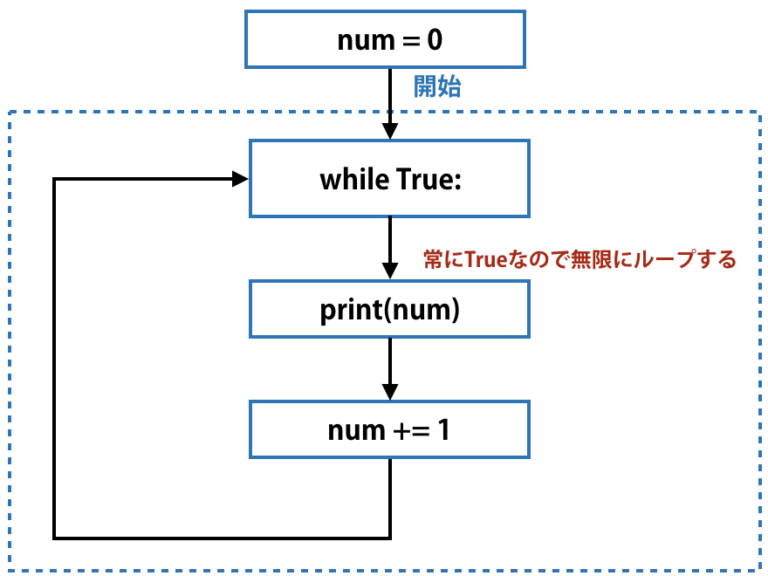

クソゲー課題
数当てゲーム
プレイ動画
解説
最初に最小値と最大値を定めて、その中から数を当てるというゲームです。
コマンド説明
def 関数の定義
例 def 関数名(引数1, 引数2, 引数3,・・・):
処理内容１
処理内容２
・・・・
return 戻り値
while True 無限ループ

- import random
-
- a = random.randint(1, 100)
- print(a)
- if a>=50:
- print(player1,"さん、先行です")
- else:
- print(player1,"さん、後攻です")
- def user_num():
- num = int(input('数字を入力してください：\n'))
- return num
- def max_num():
- max_num = int(input('最高数値を入力してください：\n'))
- return max_num
- def min_num():
- min_num = int(input('最低数値を入力してください：\n'))
- return min_num
-
- min_num,max_num = min_num(),max_num()
-
- while True:
- res = random.randint(min_num,max_num)
- if res!=min_num and res!=max_num:
- break
- f = [min_num,max_num]
- def comp(a,b):
- if a>b:
- f[1] = a
- else:
- f[0] = a
- print('続く、範囲は{}から{}まで，もう1回'.format(f[0],f[1]))
-
- flag = 0
- while True:
- num = user_num()
- if num not in range(f[0],f[1]):
- print('範囲外')
- continue
- elif num!=res:
- comp(num,res)
- elif num==res:
- print("boom！")
- break
- flag += 1
- print("残念です、%d回目で爆発した"%flag)
補足
これは中国のサイトからゲームの型を持ってきて、それに自分で付け加えたものになります。
二人でプレイする想定なので、先行後攻を決める必要があるため、それができるよう最初に付け加えました。